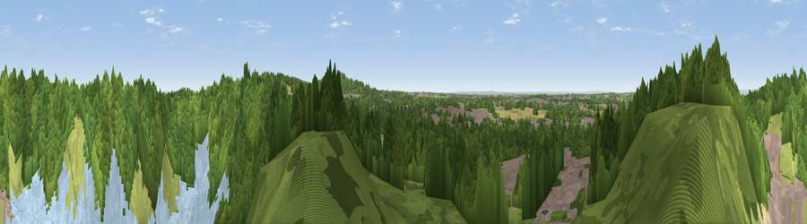

Viewpoint near Whitwick
#16634 in England · top 20% of its area beats it · near WhitwickThe view, rendered

A 360° render of this exact spot computed from the terrain model, tree cover and land cover — summer colours, afternoon light, calibrated against photographs of famous viewpoints. Real trees, hedges and buildings will differ in detail.
The panorama
Grey silhouette: terrain skyline in each direction (720 bearings, Earth curvature and refraction included). Dashed green: skyline with trees (+15 m) and buildings (+8 m) as obstacles. Blue strip: how far the ground is visible on each bearing.
Where the view opens
Wedge length = distance to the farthest visible ground on that bearing (vegetation-aware). Rings at 10, 25 and 50 km.
What fills the view
46% woodland · 31% water · 10% grassland · 9% built-up · 3% cropland · 1% bare ground
Angular shares of the visible panorama (visual magnitude), not map area. Landscape diversity 0.58 (0–1 Shannon).
Key numbers
More beautiful places nearby
The staircase of upgrades: each row has a higher view potential than everything closer. Driving times are estimates from straight-line distance, calibrated against real road routing — check an actual route before setting out.
| Place | Direction | Drive | Score |
|---|---|---|---|
| Viewpoint near Whitwick | N · 1 km | ~3 min | 71.2 |
| Viewpoint near Stanton under Bardon | SSE · 3 km | ~7 min | 76.0 |
| Viewpoint near Woodhouse Eaves | E · 6 km | ~13 min | 77.7 |
| Viewpoint near Mow Cop | NW · 72 km | ~95 min | 80.2 |
| Viewpoint near Little Wenlock | W · 81 km | ~106 min | 84.2 |
| The Wrekin | W · 82 km | ~106 min | 85.0 |
| Viewpoint near Little Wenlock | W · 82 km | ~106 min | 86.6 |
| North Hill | SW · 97 km | ~121 min | 86.8 |
52.73822, -1.33976 · source: screening · position refined by local search. Computed location — check access rights before visiting.